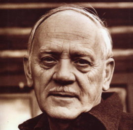
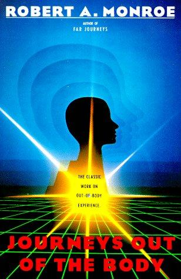
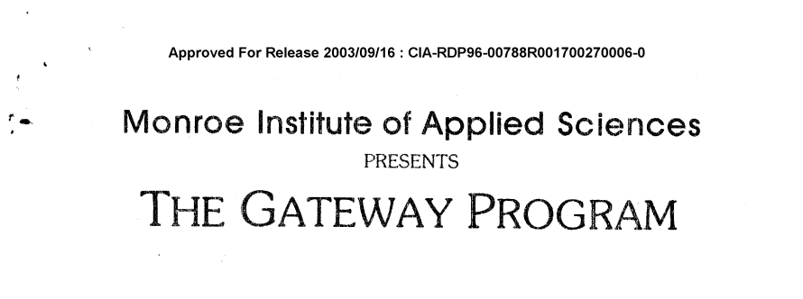
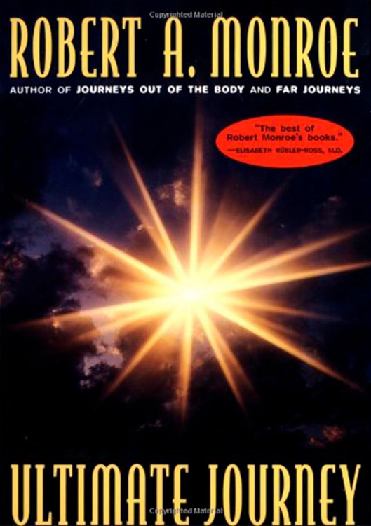

Quem foi Robert Monroe?
Robert Monroe foi um empresário, engenheiro de som, jornalista, parapsicólogo, projetor consciente, autor e pesquisador notável no campo da experiência fora do corpo (EFC) e da exploração da consciência humana. Ele nasceu em 30 de outubro de 1915, em Lexington, Kentucky, nos Estados Unidos, e faleceu em 17 de março de 1995. Monroe é mais conhecido por seus escritos pioneiros sobre a projeção astral e suas pesquisas sobre estados alterados de consciência. Sua contribuição mais significativa para o campo ocorreu por meio do Projeto Gateway (Projeto Stargate), um programa de pesquisa desenvolvido pelo Instituto Monroe.
Robert Monroe fundador do Instituto Monroe
A jornada de Robert Monroe rumo à pesquisa sobre estados alterados de consciência começou de forma acidental. Em meados da década de 1950, ele começou a experimentar experiências inexplicáveis de sair do corpo, nas quais sua consciência parecia se separar de seu corpo físico. Intrigado por essas experiências, ele decidiu investigar o fenômeno de forma mais sistemática.
Sua exploração inicial o levou a escrever seu primeiro livro, intitulado "Journeys Out of the Body" (Viagens Fora do Corpo), publicado em 1971. Neste livro, Monroe descreveu suas próprias experiências de projeção astral e forneceu uma narrativa detalhada de suas aventuras fora do corpo. Esse livro foi inovador, pois trouxe à tona o fenômeno da projeção astral e ajudou a legitimá-lo como uma área legítima de pesquisa.
Livro Jornadas Fora do Corpo
Clique na foto acima para acessar o livro.
Posteriormente, Robert Monroe fundou o Instituto Monroe em Faber, Virgínia, em 1974. O instituto foi criado com o objetivo de explorar e desenvolver técnicas para expandir a consciência humana. O Projeto Gateway, uma parte central das atividades do instituto, foi uma tentativa de usar a tecnologia de som binaural Hemi-Sync (uma técnica que utiliza frequências sonoras específicas sincronizar os dois hemisférios cerebrais alterando assim os estados de consciência) ou seja uma técnica focada em facilitar o acesso a estados de consciência alterados.
O Projeto Gateway foi um marco importante na pesquisa de Monroe. Ele recrutou voluntários para participar de experimentos que envolviam o uso de sons binaurais para induzir estados profundos de relaxamento e expansão da consciência. Esses estados eram frequentemente associados à projeção astral e a outras experiências fora do corpo.
Monroe e sua equipe registraram detalhadamente as experiências dos participantes e desenvolveram técnicas para explorar conscientemente esses estados alterados de consciência. O Projeto Gateway e as pesquisas subsequentes realizadas no Instituto Monroe resultaram em uma compreensão mais profunda dos estados de consciência alterados e suas implicações para a compreensão da natureza da mente humana.
Os escritos de Robert Monroe, incluindo livros como "Far Journeys" (Jornadas Distantes) e "Ultimate Journey" (Jornada Suprema), continuaram a influenciar a pesquisa sobre EFC (Experiências Fora do Corpo), espiritualidade e expansão da consciência. Suas contribuições ajudaram a estabelecer a projeção astral e os estados alterados de consciência como tópicos dignos de estudo e exploração.
Livro Jornadas Distantes
Livro A Última Jornada

Além de sua importância como autor de livros, Robert Monroe é lembrado por sua dedicação à pesquisa da consciência humana e por seu papel fundamental na criação do Instituto Monroe, que continua a realizar pesquisas e oferecer programas educacionais para explorar e expandir a consciência. Sua influência perdura no campo da exploração da mente humana e na busca por uma compreensão mais profunda da natureza da consciência e da realidade.